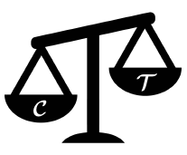
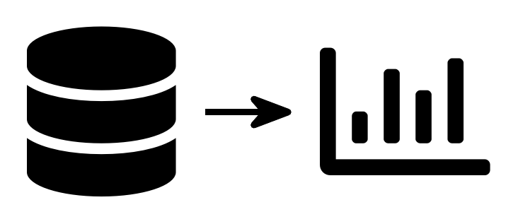
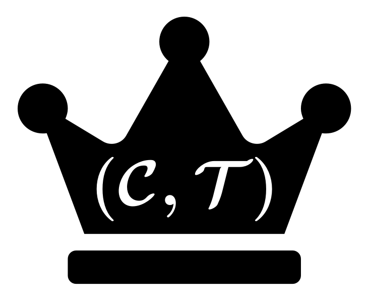
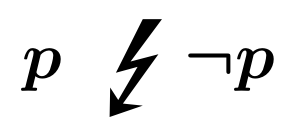
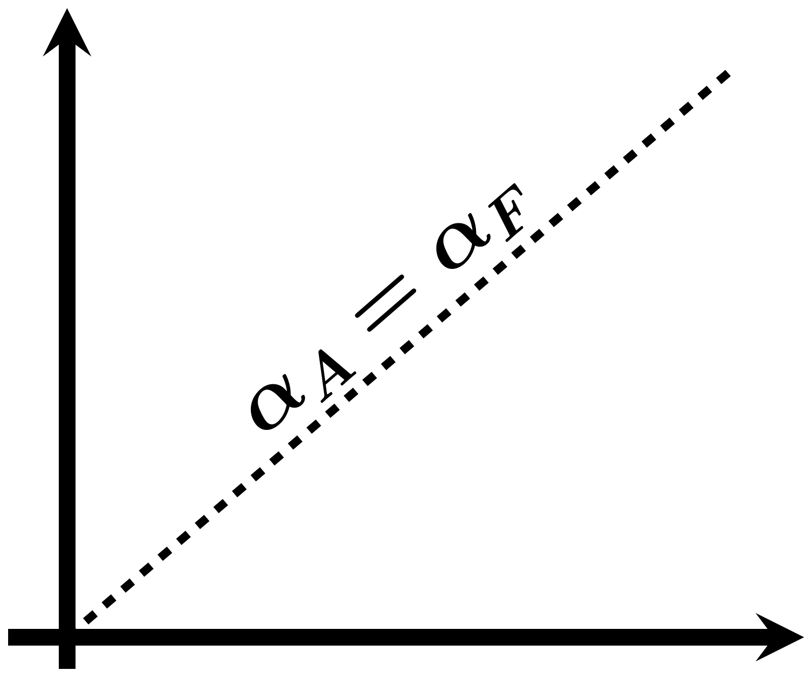
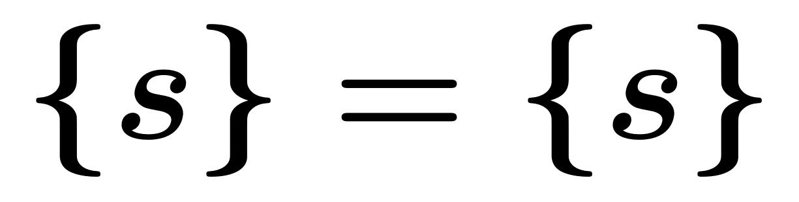

Assessing a Formal Model of Reflective Equilibrium
Technical Report
1 Preface
1.1 Abstract
In philosophy, and especially in ethics, reflective equilibrium (RE) is often considered a powerful method for obtaining beliefs that mutually support each other, are justified by evidence, and are backed by good reasons. Beisbart, Betz, and Brun (2021) have introduced a formal model of reflective equilibrium based on the theory of dialectical structures Betz (2013), which they use as a methodological tool to understand the method of reflective equilibrium better. This report is an outcome of the research project ‘How far does Reflective Equilibrium Take us? Investigating the Power of a Philosophical Method’ and summarizes the findings of assessing the model thoroughly by numerical investigation. We simulate RE processes for a broad spectrum of model parameters and initial conditions and use four different model variants (including the original model). We analyze the dependence of simulation results on different parameters and assess the models’ conduciveness towards consistency, and ability to reach global optima and full RE states. The results show that the models’ behaviour depends crucially on the specifics of the simulation setup (e.g., the sentence pool size and \(\alpha\) weights). We can, therefore, not draw any general conclusions about the overall performance of the model variants. Rather, the specifics of the context in which an RE model is used must be considered to choose a specific model. Finally, we identify some critical knowledge gaps we cannot close with this report that call for further research into RE modelling.
1.2 Content

In Chapter 2, we introduce the formal model of reflective equilibrium of Beisbart, Betz, and Brun (2021) together with three variations of the original model that have been included in this report. We motivate the metrics for model validations that guide our assessment. Finally, we describe the ensemble of RE simulations that has been generated by the computer implementation of the formal model of RE.

In Chapter 3, we present general results about the ensemble of RE simulation that form the basis of this report. They help to understand the model better, and they ease the interpretation of salient results, subsequently.

In Chapter 4, we provide results concerning the overlap of two outputs produced by the model: global optima and fixed points. They represent the static aspect of equilibrium states and the dynamic aspect of equilibration processes in RE, respectively.

In Chapter 5, we present results concerning the attainment of full RE states which meet the highest standards for RE outputs. Full RE states represent outputs that can be understood to be justified by RE.

In Chapter 6, we analyse different aspects of consistency pertaining to the outputs of the formal model. Commonly, consistency is considered to be a necessary requirement for coherence.

In Chapter 7, we display outcomes regarding maximal values of measures of RE desiderata that guide the selection of states. This part of the analysis aims to foster understanding about the trade-offs in the formal model of RE.

In Chapter 8, we summarize the main outcomes of the report and provide an outlook to promising lines of future research.
Appendices

In Appendix A , we prove analytic results about linear model variants. These results explain the salient behaviour of linear model variants that occurs throughout the report.

In Appendix B, we analyse data with respect to the attainment of “trivial” outcomes, i.e. states that consist of a single commitment paired with a singleton theory.

In Appendix C, we discuss alternative systematicity measures by analytical means. In view of shortcomings of the original systematicity measure, we evaluate the newly proposed measures in view of various desiderata for such measures.
1.3 Reproducibility
All findings and the underlying data can be reproduced by using the Python implementation of the model. The data that the model produced can be found here. For each chapter you will find here a Jupyter notebook whose execution produces all analysis results. For more specific instructions of how to reproduce all findings, please refer to the github repo of this report.
1.4 Licence
This work is licensed under a Creative Commons Attribution 4.0 International License.

1.5 Citation
BibTex citation:
@article{freivogel_assessing_2024,
title = {Assessing a {{Formal Model}} of {{Reflective Equilibrium}}},
author = {Freivogel, Andreas and Cacean, Sebastian},
year = {2024},
month = mar,
doi = {xxx},
langid = {english},
url = {https://re-models.github.io/re-technical-report/},
}1.6 Credits
This report is part of the research project ‘How far does Reflective Equilibrium Take us? Investigating the Power of a Philosophical Method’ (SNSF grant 182854 and German Research Foundation grant 412679086). Earlier versions of it were discussed on several occasions with all members of the project. We thank, in particular, Claus Beisbart, Gregor Betz, Georg Brun, Alexander Koch and Richard Lohse for their helpful comments, which helped to improve this report considerably. Finally, the authors acknowledge support by the state of Baden-Württemberg through the joint high-performance computer system bwHPC.